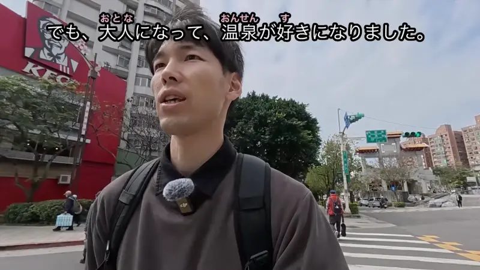
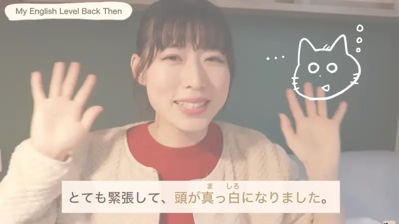
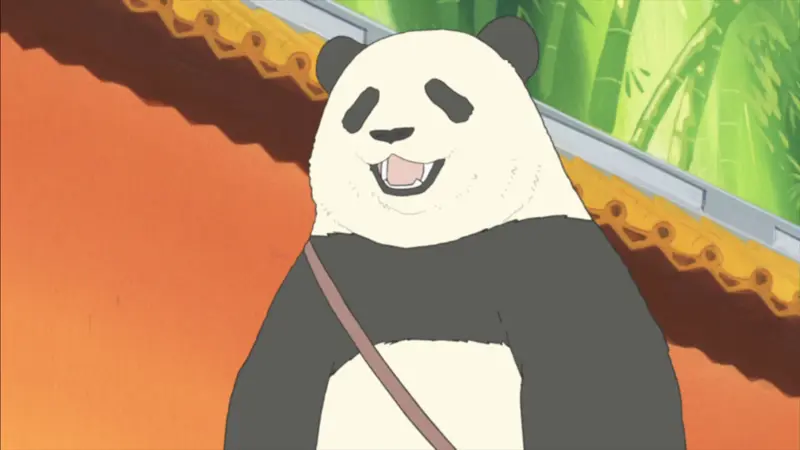
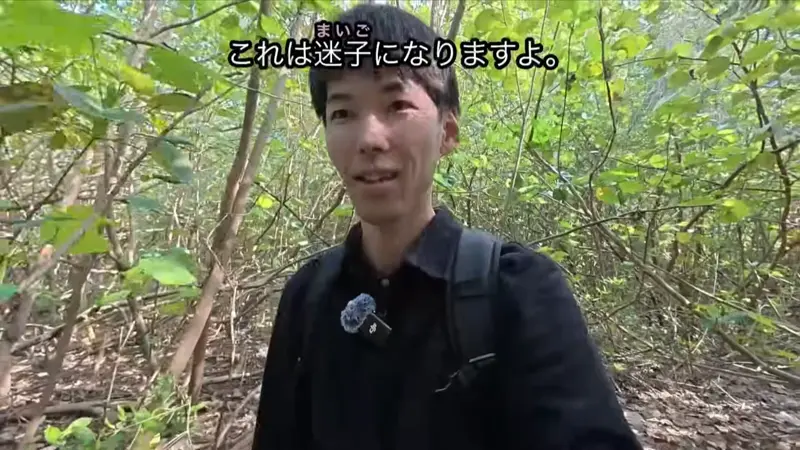

～くなる・～になる

YouTube · video
でも、大人になって、温泉が好きになりました。
"But once I grew up, I came to like hot springs." [as a kid I didn't]
なる means to become: something changes from one state to another. After a noun or a な-adjective, add に: 大人になる = "become an adult", 好きになる = "come to like".
It answers "what changed?": before, he wasn't an adult and didn't like onsen. Now both are true.
Polite: なります / なりました. Casual: なる / なった.
YouTube · video
え、お家をちょっと、え、改築して大きくなりました。
"Um, we remodeled the house a bit, and it got bigger."
With an い-adjective, swap the last い for く: 大きい → 大きくなる = "get bigger". No に here.
Examples
You step outside in November.
寒くなったね。
"It's gotten cold, huh."
寒い → 寒く + なった.
CasualA kid asks what you wanted to be when you were little.
医者になりたかったです。
"I wanted to become a doctor."
医者 is a noun, so it's 医者になる.
PoliteYour friend's Japanese has improved a lot.
日本語、上手になったね！
"Your Japanese got really good!"
上手 is a な-adjective, so it takes に too: 上手になる.
CasualYou look at the clock while gaming.
え、もう十時になった！
"Wait, it's already ten?!"
Times "become" too: it turned ten o'clock.
CasualYou look at the price tag again after a year.
高くなりましたね。
"It's gotten more expensive."
高い → 高く. The い always turns into く before なる.
PoliteWith and without
部屋が暗い。
"The room is dark." Just how it is right now.
部屋が暗くなった。
"The room got dark." It was bright before, and something changed: the sun went down, the light went off.
Sentence mining

YouTube · video
とても緊張して、頭が真っ白になりました。
"I was so nervous my mind went blank."
Literally "my head became pure white". 真っ白 is a な-adjective, so に.

Shirokuma Cafe · Episode 5
すれ違いになったら大変。
"It'd be a pain if we ended up missing each other."
すれ違い (missing each other) is a noun, so に. なったら = "if it becomes".

YouTube · video
これは迷子になりますよ。
"You could totally get lost here."
迷子 means "lost child", so 迷子になる is "become lost". The everyday way to say "get lost".